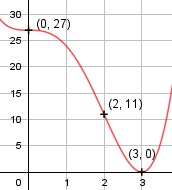

Aufgabe 51 f(x) = x4 - 4x3 + 27 f'(x) = 4x3 - 12x2, f''(x) = 12x2 - 24x, f'''(x) = 24x - 24 Definitionsbereich: -∞ < x < ∞ Wertebereich: 0 ≤ f(x) < ∞ (siehe Extrempunkte) Asymptoten: - Symmetrie: - Nullstellen: x4 - 4x3 + 27 = 0 Durch Probieren gefunden x1 = 3 Hornerschema: 1 -4 0 0 27 x1 = 3 3 -3 -9 -27 --------------------------------- 1 -1 -3 -9 0 Polynomdivision: x4 - 4x3 + 27 : (x - 3) = x3 - x2 - 3x - 9 -(x4 - 3x3) ----------- -x3 + 27 -(-x3 + 3x2) ------------- -3x2 + 27 -(-3x2 + 9x) ------------- -9x + 27 -(-9x + 27) ------------- 0 Durch Probieren gefunden x2 = 3 1 -1 -3 -9 x2 = 3 3 6 9 -------------------------- 1 2 3 0 Polynomdivision: x3 - x2 - 3x - 9 : (x - 3) = x2 + 2x + 3 -(x3 - 3x2) ------------ 2x2 - 3x - 9 -(2x2 - 6x) ------------ 3x - 9 -(3x - 9) ---------- 0 x2 + 2x + 3 = 0 p, q - Formel: p = 2, q = 3 x3,4 = x3,4 = -1 ± x3,4 = -1 ± --> keine weiteren Nullstellen N1,2(3|0) --> (doppelte Nullstelle, Berührpunkt, Extrempunkt) Schnittpunkt mit der y-Achse: f(0) = 04 - 4 * 03 + 27 = 27 Sy(0|27) Extrempunkte: 4x3 - 12x2 = 0 4x2 * (x - 3) = 0 4x2 = 0|:4 x2 = 0 x1,2 = 0, f(0) = 27 x - 3 = 0 |+3 x3 = 3, f(3) = 0 f''(0) = 12 * 02 - 24 * 0 = 0 f''(3) = 12 * 32 - 24 * 3 > 0 --> Tiefpunkt (3|0) Wendepunkt: 12x2 - 24x = 0 12x * (x - 2) = 0 12x = 0 | :12 x1 = 0, f(0) = 27 x - 2 = 0 |+2 x2 = 2, f(2) = 24 - 4 * 23 + 27 = 11 f'''(0) = 24 * 0 - 24 ≠ 0, f'(0) = 0, f''(0) = 0 --> Sattelpunkt (0|27) f'''(3) = 24 * 2 ≠ 0 --> Wendepunkt (2|11) Graph:
